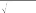

setting the value of in an arbitrary way, the portfolio manager can adopt the Bayesian approach and assign a distribution to the that is consistent with the nondata information. This assigned distribu- tion is what Bayesian theorists call the prior. Once the prior is assigned, the portfolio manager can follow the standard procedure of the Bayesian approach to obtain the best estimates of Eq. (14.3) that reflect not only the information in the data but also the useful nondata information. Calculating the Bayesian , as we call it, is consistent with the information criterion that we introduced in Chapter 2. Attempts to incorporate nondata information into the model without calculating the Bayesian most likely will fail to exploit the information completely and violate the information criterion, seriously distorting the portfolio. The Bayesian , on the other hand, is entirely a gain to the portfolio manager and another strong source of mojo.
14.4 QUANTIFYING QUALITATIVE INFORMATION
The first step of Bayesian analysis is to decide on the prior of the from the nondata information, a somewhat challenging step because nondata information is often qualitative. In this section we will go through three relatively simple but commonly faced situa- tions involving calculating the prior. More complicated cases will be dealt with in the next two sections. First, we will start with the situation in which the portfolio manager receives a list of stocks screened by other analysts. Then we will consider the case in which the portfolio manager receives a ranking of selected stocks. Lastly, we will consider the case in which the portfolio manager wants to incorporate buy and sell recommendations for selected stocks.
14.4.1 Quantifying a Stock Screen
Suppose that we have many lists of analyst-recommended stocks, each list made by an analyst through some screening process. How
can we convert these lists into the prior for the of each stock? When a stock is included in a list, it means that an analyst believes that the stock is likely to outperform the stocks not included in the list. That is, a listed stock is likely to have a higher than that of an unlisted stock. If stock A is included in a list but stock B is not, we can say that
P(A > B) > 0.5 (14.4)
If stock A is included in many analysts’ lists and stock B in none, then we can be more confident that A is greater than B because more analysts agree on the superiority of stock A. Specifically, if we consider each list (or analyst) equally reliable, then we can say that
P
A B
number of lists including stock A number of all lists
(14.5)
That is, if half the analysts say that A is greater than B, then we may be 50% sure that A is greater than B. If every analyst says that A is greater than B , then we may be (almost) 100% sure that
A is greater than B.
If stock B is not included in any of the lists, the lists do not say anything about stock B. Thus, as far as B is concerned, we do not need to do anything special. We can estimate B in the usual way and obtain the estimate ˆB and its standard error S(ˆB). From the Bayesian perspective, ˆB and its standard error are considered to be the mean and the standard deviation of B. That is, assuming a normal distribution, we can write
B ~ N [ˆB, S(ˆB)2] (14.6)
Once Eqs. (14.5) and (14.6) are obtained, it is straightforward to find the prior distribution for A. The inclusion of stock A into the list does not imply anything about the relative amount of uncertainty regarding A and B. Thus it is reasonable to take S(ˆB) as the standard deviation of A as well. Now we only have to deter- mine the mean of A. Let A be the mean of A. Assume that A has a normal distribution and is independent of B (which is reason- able given that we do not have any information indicating other- wise). Then
A — B ~ N [ A — ˆB, 2S(ˆ B)2] (14.7)
It follows immediately that
pA P
A B
0 1 ˆB A
(14.8)

2SˆB
2SˆB
2SˆB
where is the standard normal cumulative distribution function. Considering Eqs. (14.5) and (14.8),
A =ˆB — J 2 S(ˆB) —1 (1 — pA) (14.9)
where —1 is the inverse standard normal cumulative distribution function that takes a probability as the argument. Thus we have determined the prior distribution for A. We can generalize this analysis in a number of directions. First of all, we can find the dis- tribution of B using all the stocks that are not included in any of the lists. If we cannot find such stocks, then we can use an arbitrary set of stocks and modify Eq. (14.5). Also, if different analysts are not equally reliable, then we may assign different weights to different analysts and lists.
A more important generalization of the analysis is the case in
which there is only one list of stocks. It may be that all analysts work as a team and produce a single list, or it may even be the case that the portfolio manager is the one who produces the list. For one stock list, the preceding analysis is still valid except for Eq. (14.5). For Eq. (14.5), the portfolio manager himself or herself must decide on the probability that A is greater than B. While this may seem quite
subjective, this is not necessarily a problem. The prior distribution is
meant to represent subjective opinion. When there is only one list, Eq. (14.9) is common for all stocks included in the list. That is, all stocks in the list have the same mean as expressed in Eq. (14.9).
14.4.2 Quantifying a Stock Ranking
Suppose that instead of having a simple list of stocks, we have ana- lyst-prepared rankings of stocks. We can easily extend the idea developed in the preceding subsection to this case. If stock A is ranked higher than stock B, it means that an analyst believes that the of stock A is higher than the of stock B. The probability of the of stock A being higher than the of stock B can be comput- ed by comparing the number of analysts who believe this to be true to the total number of analysts who do not. That is,
P
A B
number of analysts ranking stock A higher than stock B number of all analysts
(14.10)
Note that Eq. (14.10) is essentially identical to Eq. (14.5). Thus we can follow the same procedure for dealing with stock screens.
Once stock B is chosen, this same stock should be compared with all the other stocks to exploit all the information in the rank- ing. One possibility is to choose for stock B a stock that is ranked most frequently at the bottom of ranked lists, and for each of the remaining stocks, calculate Eq. (14.10) relative to stock B. In any case, how stock B is selected does not really matter as long as it is compared with all other stocks. The procedure is identical whether all stocks are ranked by every analyst or different stocks are ranked by different analysts. If there is only one ranking (perhaps made by the portfolio manager himself or herself), then the portfolio man- ager assigns a number to P(A > B) in Eq. (14.10) and follows the
same procedure.
14.4.3 Quantifying the Buy and Sell Recommendations
Qualitative information also may be in the form of analysts’ buy and sell recommendations. Instead of a simple “buy” or “sell,” ana- lysts often give stocks one of five recommendations: strong buy, buy, neutral, sell, and strong sell. These recommendations can be converted easily into rankings of stocks, and after that, the same procedure used for stock rankings applies. One way to rank the stocks is to use the buy ratio, which is the number of buy recom- mendations divided by the total number of buy and sell recom- mendations. Once the buy ratio is calculated for every stock, we can find the probability of the of stock A being greater than the of stock B by subtracting the buy ratio of stock B from the buy ratio of stock A. That is,
P
number of buy recommendations for A
A B number of buy recommendations for A
+
number of sell recommendations for A
number of buy recommendations for B
(14.11)
number of buy recommendations for B
+ number of sell recommendations for B
The buy ratio of stock A shows what fraction of analysts believe that stock A is superior, and the buy ratio of stock B shows the frac- tion of analysts that believe that stock B is superior. The difference